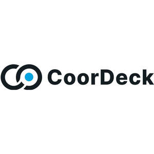

Trade Mark Journal No.2025/036 5 September 2025
UK00004252550 21 August 2025 (9,35,36,42,45)

- Class 9
- Downloadable computer software; Downloadable mobile applications; Computer peripherals; Computers; Diving equipment; Diving suits; Scuba diving masks; Diving goggles; Ear plugs for divers; Nose clips for divers and swimmers; Gloves for divers; Breathing apparatus for underwater swimming; Breathing apparatus, not for medical purposes; Fire extinguishing apparatus; Computer software; Communications software; Communications apparatus and instruments.
- Class 35
- Advertising, marketing and promotional services; Business assistance, management and administrative services; Advisory services relating to business organization; Business administration; Office functions; Procurement of contracts [for others]; Demonstration of goods.
- Class 36
- Financial, monetary and banking services; Insurance services; Real estate services.
- Class 42
- Industrial analysis and research; Industrial design; Quality control and authentication services; Design and development of computer hardware and software; IT services; Software as a service [SaaS]; Design services; Development and testing of computing methods, algorithms and software; Computer programming; Computer software design services; Engineering services in the field of communications technology; Development of software for communication systems.
- Class 45
- Legal services; Security services for the protection of property and individuals; Dating services; Online social networking services; Online social networking services accessible by means of downloadable mobile applications; Funerary services; Babysitting services.
COORDECK TECHNOLOGIES L.L.C S.O.C
Representative: Trama Legal s.r.o.